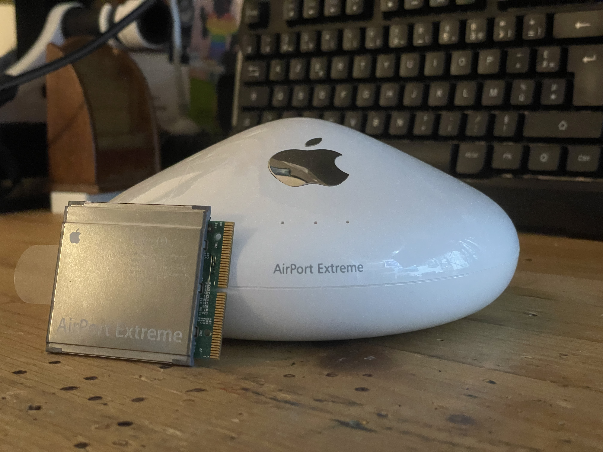
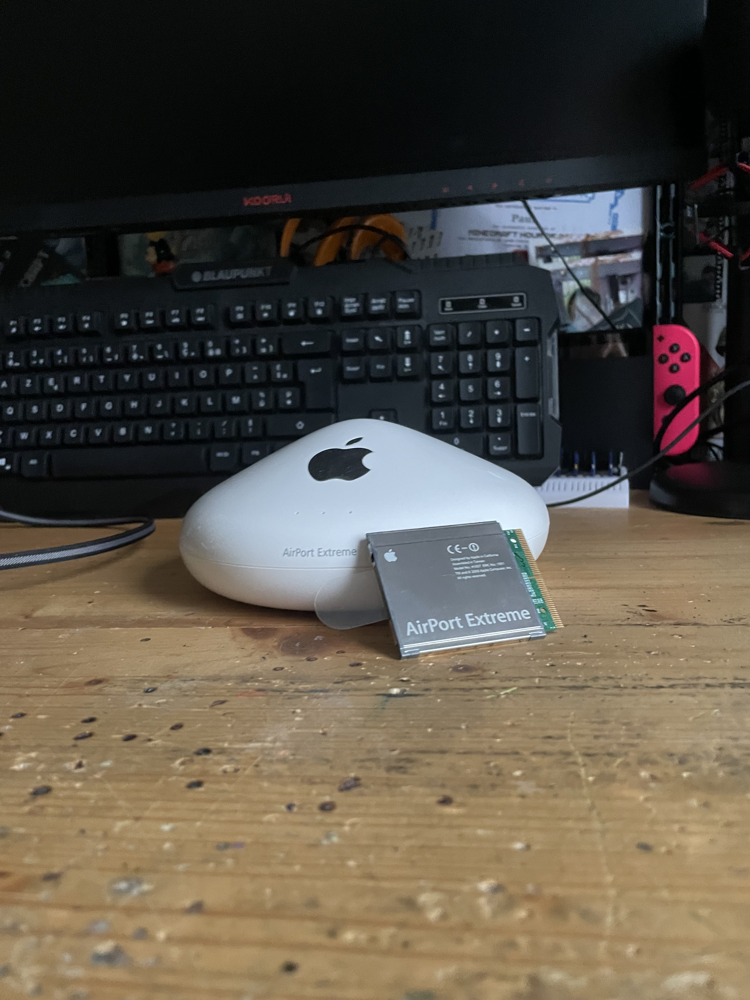
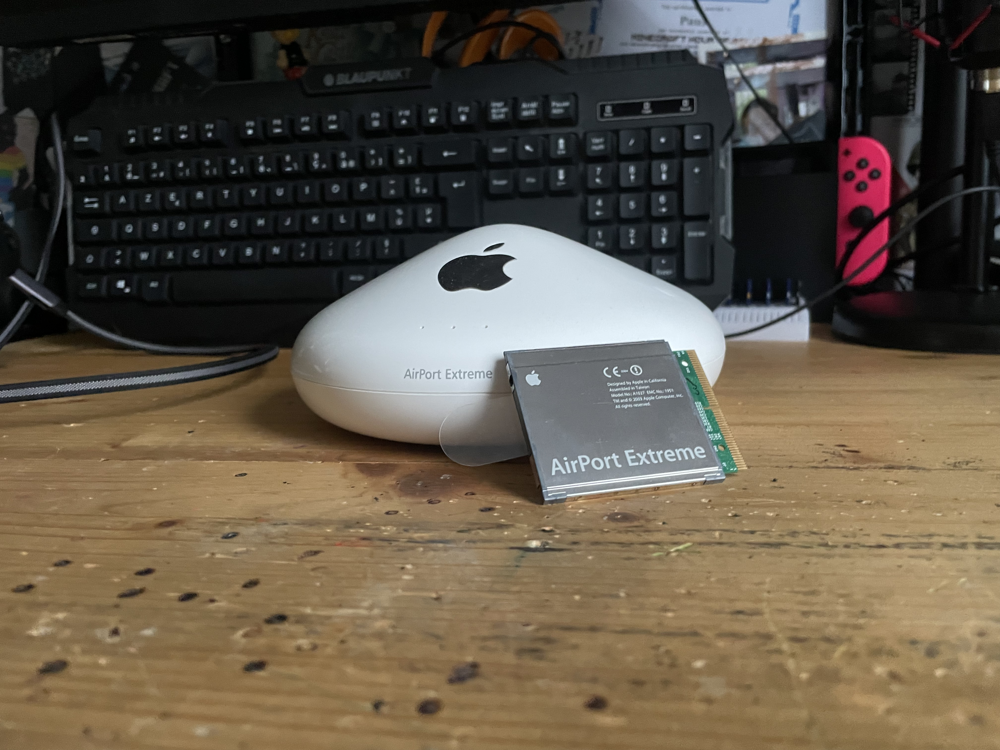

Apple Airport Extreme 802.11g
18th of November 2025 - Gamerabbit

The AirPort Extreme 802.11g card and base station were released on 17th of January 2003 at MacWorld. The main upgrade from the previous AirPort Router was the improved speed of 54Mbps that came from the new Wi-Fi Standard 802.11g, the previous AirPort Base Station and the 802.11b Wi-Fi used with it were limited to a Wi-Fi speed of 11Mbps. Apple's other main selling point was the compatibility with 802.11b devices on the 802.11g router.

The tech specs of the Airport Extreme Base Station are the following :
- Released: January 7, 2003
- Wi-Fi: 802.11b/g (unofficially named Wi-Fi 3)
- Frequency: 2.4 GHz
- Data Throughput: 54 Megabits per second (Mbps)
- Interfaces:
- RJ-45 connector for built-in 10/100BASE-T Ethernet WAN
- RJ-45 connector for built-in 10/100BASE-T Ethernet LAN
- RJ-11 connector for built-in 56K V.90 modem
- External antenna connector
- USB 2.0 for network printing
- >56k phone line modem (on some models)
- Security:
- or 128-bit WEP encryption
- WPA
- MiMO: No
- Concurrent Devices: Up to 50
- CPU: AMD Alchemy Au1500
- Flash Memory: 4 MB
- RAM: 32 MB
- Model Number: A1034
And here the Airport Extreme Card tech specs :
- Released: January 7 2003
- Wi-Fi Version: 802.11g (unofficially named Wi-Fi 3; backwards compatible to 802.11b)
- Bluetooth Version: Bluetooth 2.0+EDR (Enhanced Data Rate)
- Data Throughput: Up to 54 megabits per second (Mbps) in perfect conditions
- Range: Up to 150ft (50m) indoors
- Frequency: 2.4 GHz
- Connector: Mini PCI for Wi-Fi; USB for Bluetooth (Not user-replaceable)
From it's release, the Airport Extreme 802.11g card, every Mac (except the Xserve) had an Airport Extreme card 802.11g slot which are different from the 802.11b Airport Card, and all new iBook and PowerBook models were shipped with a modified version of this card that had Bluetooth 2.0 EDR built-in (the Bluetooth module was connected with an USB connection and the Wi-Fi module with a mini-PCI card slot) but those pre-built card weren't user changeable
The Airport Extreme base station was the first Airport Base Station with a USB port that enabled wireless printing, and first to have bridging capabilities with WDS (Wireless Distribution System). With the new still in development at the time Wi-Fi Standard, the 802.11g delivers five Times faster Wi-Fi than it's predecessor, the 802.11b. The new Airport Extreme Base Station allowed for 50 Windows and Mac users simultaneously. The Base Station came at the price of $199 and the Card came at a price of $99.
One of the 802.11g AirPort Extreme Base Station could be Powered over the Ethernet (PoE) but the USB 2.0 Port for printing is deactivated if the POE is used. It also had an antenna port, which was meant to upgrade the Wi-Fi range of the Airport Extreme network. When compared to the original Airport Base Station from 1999, the Airport Extreme Base station had a better encryption, more ports, more features, faster data rates.
At the Airport software was divided into three different apps. The Airport Admin was meant for advanced control of individual airport base station, such as managing Internet settings, passwords and name of the airport base, hiding or showing the wireless network and channel selection.
The Airport Management Utility was meant for basic control over a few Airport, such as creating groups of Airport base station, showing list of Airport with their information (IP, MAC adress, status and firmware), configuring the Airport base, viewing logs for troubleshooting and monitor view, which update every 5 seconds and shows the signal quality, signal strength and noise level being received by each client computer on the airport based network.
And finally the Airport Client Monitor, it is a utility to conduct wireless network survey, it shows data rate, signal strength and noise level of a base station. It could also create an accurate map of airport base unit's coverage area by moving around the area where Airport base station is deployed. The AirPort Utility could also control the Wi-Fi transmission power (meant to reduce interference between Airport Extreme Base Station in Airport extreme network).
It feels like the newer Utility software was a downgrade compared to the possibilities in the older airport utility version.

"6. Lets you phone home — literally
The PPP dial-in feature in AirPort Extreme lets you make one very important wireless connection — to your own Macintosh at home.
Thanks to connectivity options such as DSL, cable and Ethernet, you can call the 56K V.90 modem-equipped AirPort Extreme Base Station at home when you’re at work or traveling.
Need a document that’s on your Mac desktop at home? Not to worry. If your Mac is on, ready to share files, and connected to the Internet using the AirPort Extreme Base Station and a broadband connection, you can access it as well as the other computers — from almost anywhere in the world."
The PPP dial-in feature consists of dialing into your home network from a remote location and acces files that are on the mac (which need to be turned on) connected on the airport extreme network.
It is a sort of mini-VPN in 2003, which mind-blowing at the time and a barely talked about feature.
The AirPort Extreme Base Station was bleeding Edge technology at the time, it brought improvement from the previous Airport Base Station. But also new feature like the PPP dial-in feature, or printing over network. Nowadays this technology has evolved and improved. The Airport Extreme Base Station and card brought wireless networking in homes, in my opinion without Apple's Airport router Wi-Fi wouldn't be as popular as it today.
Here is an interesting advertising of the Airport Extreme in 2003 :
Sources:
- https://en.wikipedia.org/wiki/AirPort_Extreme
- https://www.apple.com/newsroom/2003/01/07Apple-Delivers-AirPort-Extreme-802-11g-Wireless-Networking/
- https://theapplewiki.com/wiki/List_of_AirPort_Cards
- https://apple.fandom.com/wiki/AirPort_Extreme
- https://web.archive.org/web/20031202014702/http://www.apple.com/airport/
- https://everymac.com/systems/by_capability/macs-with-airport-airport-extreme.html
This blog is powered by curiosity, and your support. Every contribution helps me buy more tech to review and share honest insights with you. If you’d like to help out, here’s my paypal : paypal.me/Gamerabbit16